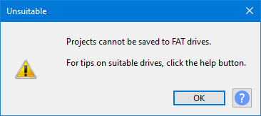
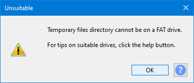
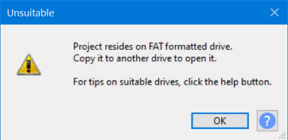
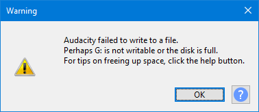
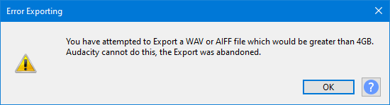

Error: Unsuitable drive
- FAT and FAT32 formatted drives are subject to a 4GB limit for any single file, this makes them unsuitable for use in Audacity for live projects.
- FAT/FAT32 drives can readily be used for Exports of audio files from Audacity.
| You are strongly advised NOT to save your active project to an external USB stick/disk, whatever the format, as it is unlikely to be fast enough for satisfactory recording and editing. |
Contents
FAT/FAT32 formatted drives
FAT/FAT32 drives are not suitable for use with Audacity's Unitary project format, where the project exists in a single file.
Saving projects
- 
Audacity prevents you from saving a project using a FAT/FAT32 formatted drive.
- Disks or drives that are formatted as FAT/FAT32 are subject to a maximum file size limit of 4GB, this is about 3 hours 22 minutes of stereo at default settings.
- But a much shorter project can readily approach or exceed the 4GB with temporary filespace usage as you edit.
- Therefore to ensure the security of data, avoiding project loss or damage, Audacity prevents you from having live projects on a FAT/FAT32 formatted drive.
Temporary files directory
Audacity also prevents you from setting the Temporary files directory, in Directories preferences, on such a drive.
- 
Workarounds for FAT/FAT32
Storing a project on a FAT/FAT32 drive
If you need your project to be on a portable drive (a USB clip for example to send a project to a friend or colleague)
- First save your project to an NTFS formatted drive (APFS on macOS), normally your system drive, or some other suitably formatted drive.
- Then use your computer's file manager to copy the AUP3 project file to the FAT-formatted drive. Note this will only work if the AUP3 project file is less than 4GB.
| If your project file is greater than 4GB you will need to reformat your USB drive as exFAT format which will accommodate much larger files. |
Opening an older AUP project that was saved to a FAT/FAT32 formatted drive
Older AUP projects (created in Audacity 2.4.2 or earlier) will easily fit on a FAT/FAT32 drive as the old file structure was based on lots of little files.
Projects will not open from a FAT/FAT32 formatted dive, instead you must copy your project (AUP and its associated _Data folder) to an NTFS formatted drive (APFS on macOS), normally your system drive, and open the project from there.
Note carefully that you will not be able to save the project back to the FAT/FAT32 formatted drive.
Opening an AUP3 project that was stored on a FAT/FAT32 formatted drive
You cannot save AUP3 projects on a FAT/FAT32 formatted drive - but you may have copied one there (provided it was less than the 4GB limit) for archive, backup or transfer.
If you attempt to you will see this error message:
- 
As with AUP projects, Unitary AUP3 Projects will not open from a FAT/FAT32 formatted dive, instead you must copy your AUP3 project to an NTFS formatted drive (APFS on macOS), normally your system drive, and open the project from there.
Exporting to a FAT/FAT32 formatted drive
Audio in projects can be exported to FAT/FAT32 formatted drives, but the 4GB limit also applies to such exports.
- The default export setting is 16-bit so you get a maximum size of about 6 hours 45 minutes of stereo audio for WAV and AIFF at Audacity's default settings.
- For compressed formats such as MP3 and AAC the maximum size will be much larger and unlikely to be an issue for most, if not all, users.
If your export exceeds these limits you will get an error even though the drive as a whole is not full:
- 
Clicking the will remove the partially exported file from your FAT/FAT32 drive.
In this case freeing up space will not work and you will need to Export to a non-FAT formatted drive.
WAV and AIFF files
WAV and AIFF files are always subject to a maximum 4GB limit (and the forecasted size can be accurately calculated in advance, unlike with compressed file formats).
Audacity therefore has a special trap for this case and does not even attempt to make the export, you will instead see this error message:
- 
See Size limits for WAV and AIFF files for size limits at different encoding formats.